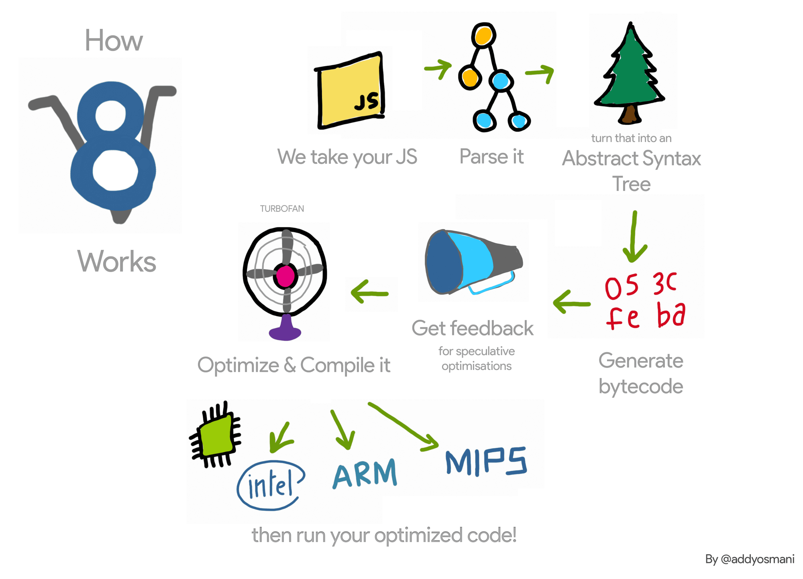
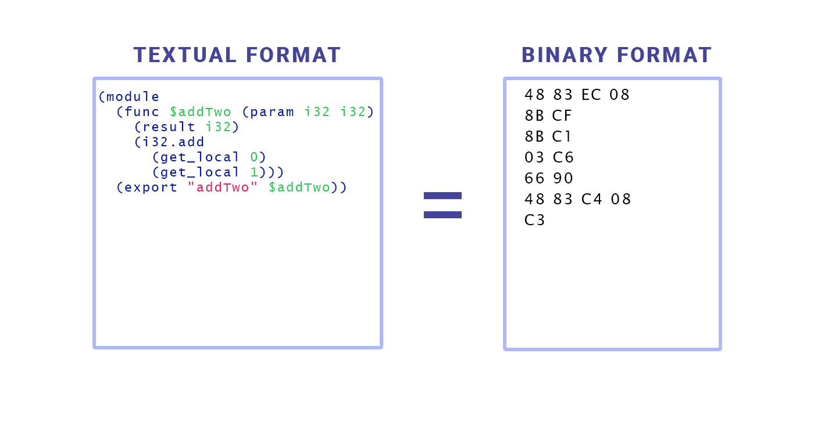
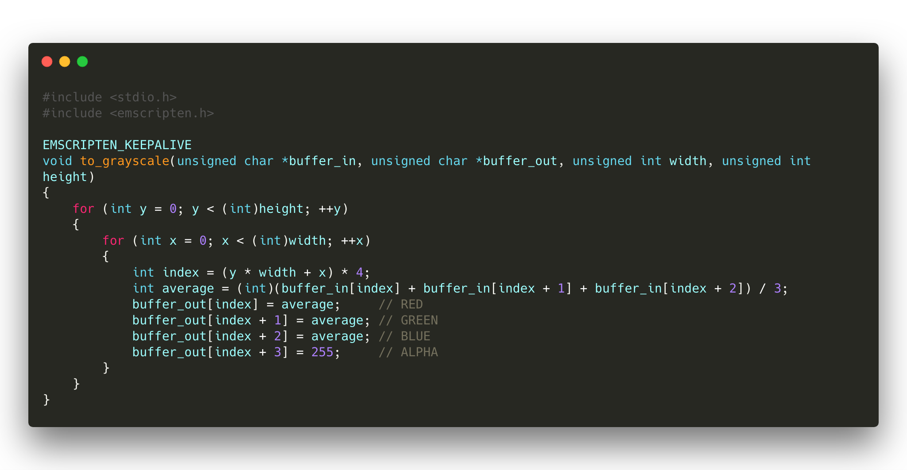
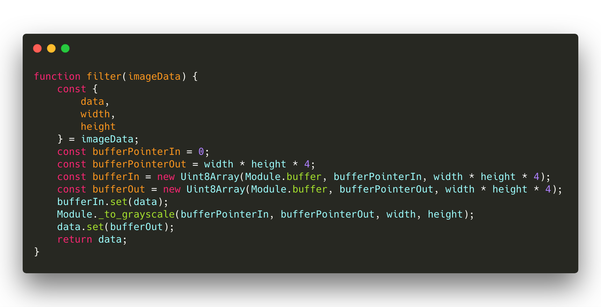

Hello WebAssembly!
What is WebAssembly?
High performance, low-level bytecode for the web
Supprted by all major browsers
Goals
- Enables code reusability between native and web
- Bring second life to legacy code

Demo OpenCV.js
Low-level bytecode

V8 Engine
- WebAssembly != Language that compiled to JavaScript
- WASM run directly on JIT compiler
Compilation target for low-level languages

Some languages that support WASM compilation

Format
Add function in WAT
(module
(func $add (param i32 i32)
(result i32)
(i32.add
(get_local 0)
(get_local 1)))
(export "add" (func 0)))
wat2wasm hello.wat -o hello.wasm
const { readFileSync } = require("fs");
// wat2wasm add.wat -o add.wasm
const run = async () => {
const buffer = readFileSync("./add.wasm");
const module = await WebAssembly.compile(buffer);
const instance = await WebAssembly.instantiate(module, {});
console.log(instance.exports.add(40, 2));
};
run().catch(console.error);
Emscripten
LLVM-to-JavaScript compiler.
Install Emscripten
Download https://github.com/emscripten-core/emsdk
# Download and install the latest SDK tools.
./emsdk install latest
# Make the "latest" SDK "active" for
# the current user. (writes ~/.emscripten file)
./emsdk activate latest
source ./emsdk_env.sh
Convert RBGA image to grayscale
filter.c
main.js
